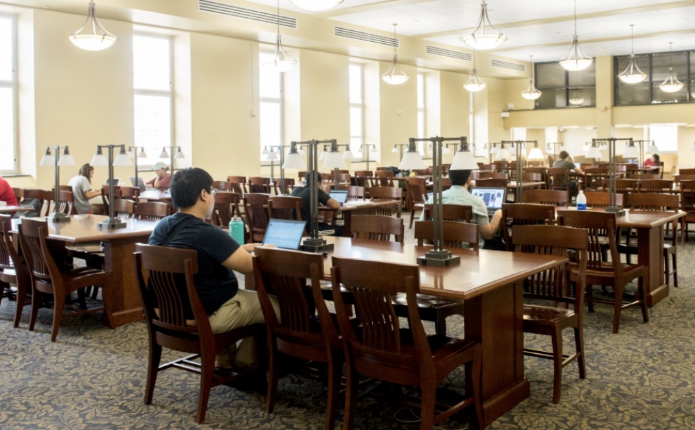

UMD students intensely prepare for final exams in the McKeldin Library Reading Room. The library is home to seven floors of study carrels, classrooms, quiet spaces and more. (Photo credits: Mike Morgan via UMD Libraries, 2017)
Gone are the days where productivity was viewed academically as a goal or achievement.
Instead, for many college students, it has become a constant expectation.
“The most pressure in my life comes from work and school,” said Tanner George, a 20-year computer engineering student and football player personnel intern at the University of Maryland.
George is one of many college students with a number of obligations to balance. Between classes, internships, extracurricular activities and social life, students are left feeling like every moment needs to be optimized.
The continuous influx of responsibilities contributes to building a culture in college settings that applies pressure on students to be productive.
One of the biggest contributing factors? Academic expectations.
Overwhelming coursework, tight deadlines and the looming strain of upcoming exams stretch students extremely thin.
Zico Agyapong, a 19-year-old statistics major at the university, believes that college desperately needs a culture shift.
"College is not about learning,” Agyapong said. “I can’t speak for older generations, but now, the only thing that matters is getting good grades, a high GPA, then getting your degree.”
“I want to be a functioning member of society,” he said. “To do that, I have to go through the pain of a getting a degree.”
Many students share the same sentiment, including George, who suggests universities should foster a project-based approach to curriculums.
“I wish less emphasis was placed on exams and more emphasis was placed on projects,” he said. “Projects do a better job of modeling what we’ll do after graduation.”
“I tend to enjoy them more,” he added.
In many cases, this relentless academic pressure can actually promote unhealthy habits, with procrastination being a prominent one.
The stress that a heavy workload brings can also cause a significant loss of sleep in college students.
According to recent data from the University of Georgia’s health center, college students averaged 6-6.9 hours of sleep per night, which is about an hour under the recommended 7-8 hours for young adults.
“I lose sleep over trying to finish my homework,” Agyapong said when talking about how he balances his average day.
The limited rest often leads to burnout, which makes it even more difficult for students like Agyapong and George to keep up with their busy workloads.
But academics are only a piece of the puzzle.
Outside factors like social media also play a significant role in pressuring college students to stay productive.
“Social media displays everyone else’s best progress,” Agyapong said. “That implies that I, too, should have major progression.”
Seeing classmates land internships, strike big accomplishments or receive strong grades can add another layer to the existing stress from academic expectations.
In a way, it can push students to work harder, Agyapong said. However, social media can be a double-edged sword.
While it is a constant reminder of the progress of all your peers, it also poses an addictive distraction.
A 2025 study, completed by "Scientific Reports” revealed that “68% of college students use social media for six or more hours daily.” The average time that a person is awake ranges anywhere from 15 to 18 hours, meaning that a large percentage of students are spending one third of their day on some form of social media.
Instagram and TikTok are two of the main sources of distraction as a result of their mass amounts of easily accessible short-form content.
“Using Instagram makes my brain feel sluggish,” George said. “It makes me feel less productive overall.”
As students waste time scrolling through captivating one-minute videos, they feel less productive, which only adds more pressure to catch up academically. So, the cycle continues.
In some cases, students are afraid to participate in leisurely activities.
“I deserve a break after getting done with a study session,” Agyapong said. “But, that makes me feel guilty about not getting other assignments done.”
Breaking a cycle that constantly demands high output from students is not simple, however.
Agyapong suggests colleges “minimize the importance of grades and celebrate the work ethic that students have toward assignments.”
Until then, students at the University of Maryland will continue to navigate a culture where productivity is an expectation to be maintained rather than an accomplishment.